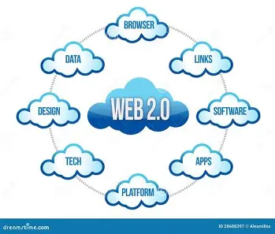

Web 2.0 refers to the second generation of the World Wide Web, which emerged around 2004. Unlike Web 1.0 which was a read-only platform, Web 2.0 is often called the read-write web because it allows users to both consume and create content. It transformed the Internet from a platform purely for delivering information into a platform for participation and interaction.

Web 2.0 introduced several major changes to the way the web works:
The most important difference between Web 1.0 and Web 2.0 is who drives the content. Web 1.0 was driven and controlled by the powers-that-be — organizations and website owners. Web 2.0 is driven by users. Whereas Web 1.0 websites were constructed so that information and ideas flowed only one way, Web 2.0 websites allow information to flow two ways, making the web truly interactive and participatory.
Many websites that started out as static Web 1.0 sites began adding features like blogs and forums to stay relevant. Those websites that continued to be static fell further and further behind. Users began expecting to be able to ask questions, get answers and interact with websites in a meaningful way. The Internet had always been a platform for information, but with Web 2.0 it also became a platform for participation. Today we take these interactive features for granted but they represent a major shift in how the web works.